User Interface Design
Initial Paper Sketches
Figma Prototyping
Website User Interface
Client Requirements
Upon consultation with our client, we identified the crucial requirements for our web design project
in a hospital setting.
As a result, we embarked on sketching our initial design, primarily using hand-drawn techniques on a
tablet.
Our first sketch was crucial to us, as it had to incorporate a number of client-identified key
features including:
-
The ability for medical staff dispatchers to:
- Track the live location of porters
- View the availability of porters
- Send delivery requests to available porters based on factors like:
- Their proximity to the pick-up point
- Their availability
Initial Sketches
Sketch 1:


Sketch 2:


In our first sketch, usability and simplicity were our main priorities, so that hospital staff
do not experience any difficulties
when it comes to navigating our website. As a result, we designed a home page that features a
navigation bar to allow users to switch between the live monitoring and
delivery details page effortlessly.
The live monitoring page comprises markers for porters, displaying their availability on the
side. We have also incorporated a feature that enables
users to sort the porters by distance, ensuring that the nearest porter is assigned to a
particular delivery request. Clicking on an available
porter sends the user to the delivery request page.
The delivery details page features a comprehensive history of on-going deliveries, allowing the
medical staff to monitor which porters are delivering
which supplies.
Our second sketch is an improvement of the first, with subtle changes to enhance usability. We
have added a view option in the live monitoring page,
enabling users to see different parts of the hospital. We have also created a table on the
delivery request page, which promotes organization and ease
of access.
The sketches seen above are preliminary designs, created for the purpose of comparison before
proceeding to the interface design stage using Figma.
As mentioned previously, our sketches ensured that the final design is user-friendly, intuitive,
and efficient for medical staff in a hospital setting,
so that deliveries can be fulfilled as quickly as possible.
Figma Prototyping
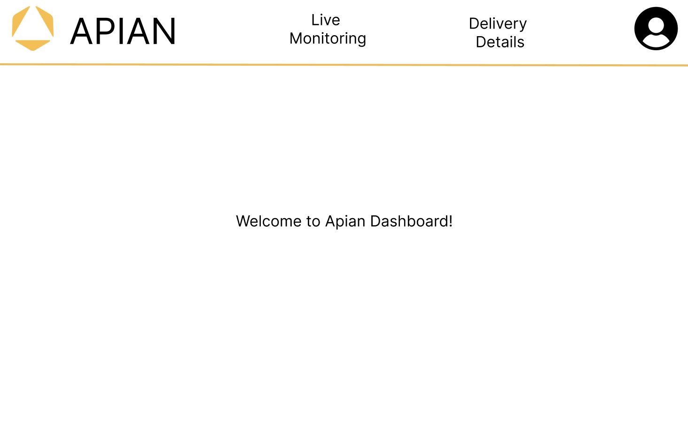 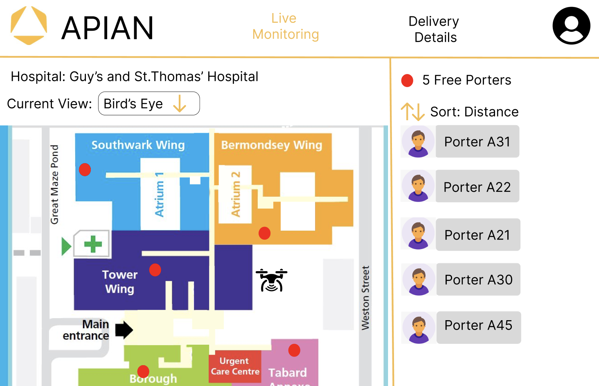 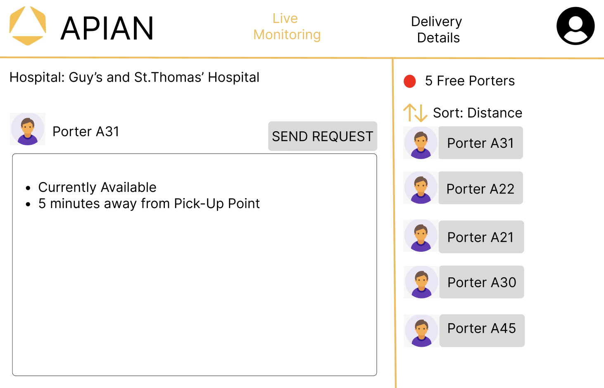 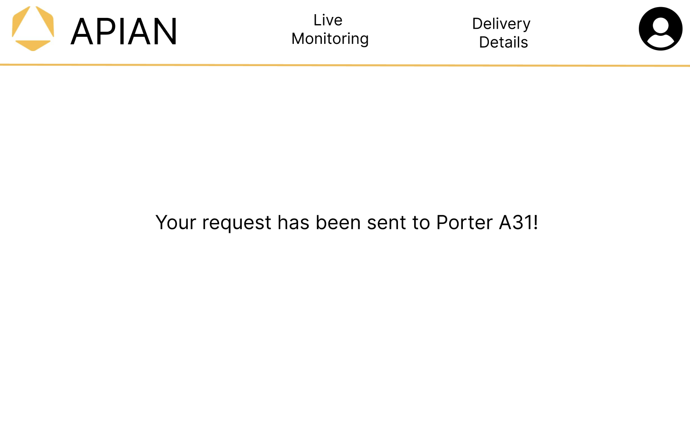 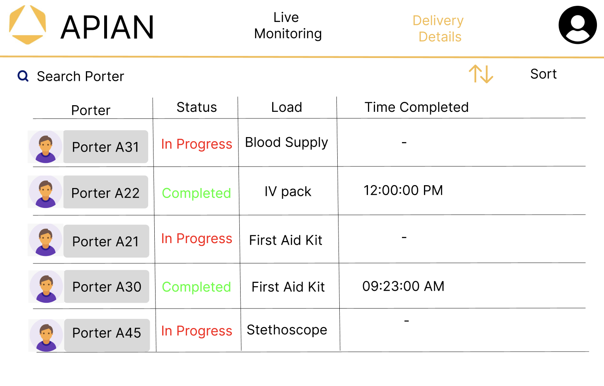 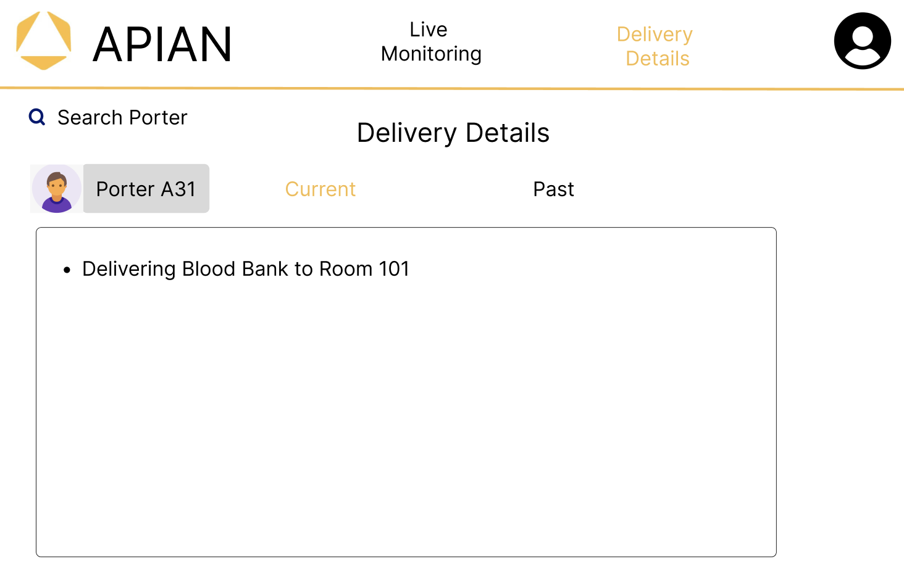 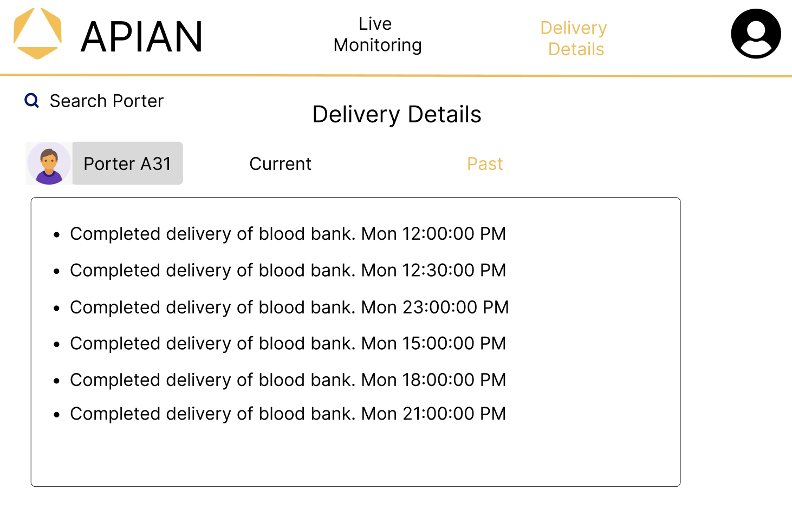
After an internal meeting with our team, we decided to choose the best components from the previous two sketches and decided to create a design on Figma. This is to show our client and for them to provide concrete feedback. As per the requirement this sketch includes all the important ones such as live monitoring, delivery requests, and delivery history. We also paid attention to detail such as coloring and made the theme similar to the Apian Logo.
Figma Iterations

 Our client’s UI/UX specialist gave us feedback after showing them the first Figma design. And
she helped us give concrete feedback. Here are some of the feedback she gave us:
Our client’s UI/UX specialist gave us feedback after showing them the first Figma design. And
she helped us give concrete feedback. Here are some of the feedback she gave us:
- “Use a different font size/thickness for the display options. The navigational menu should be different from the rest of the page.”
- “Dropdown + Sort by components aren't that obvious. I would use the Bootstrap UI icons."
- "Try showing the user which page is active in a different way. It's not very obvious and looks like you've just changed the colour for fun."
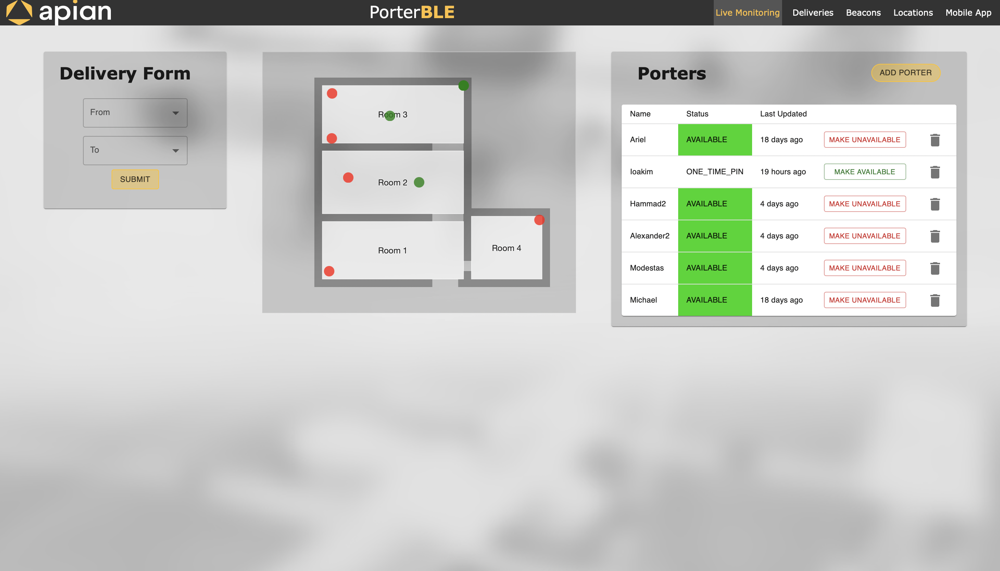 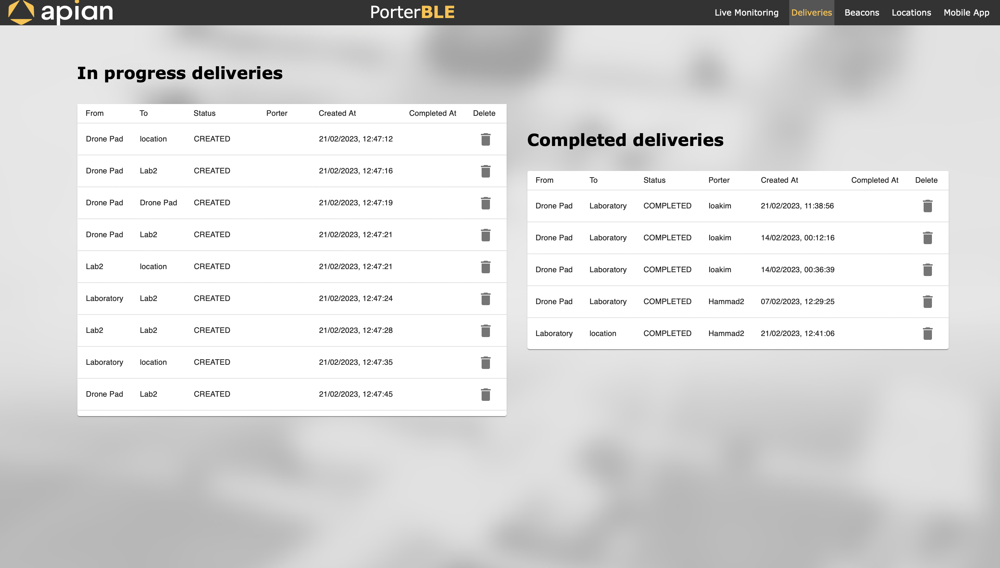 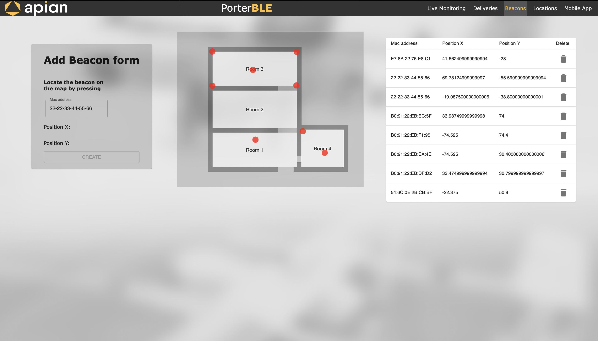 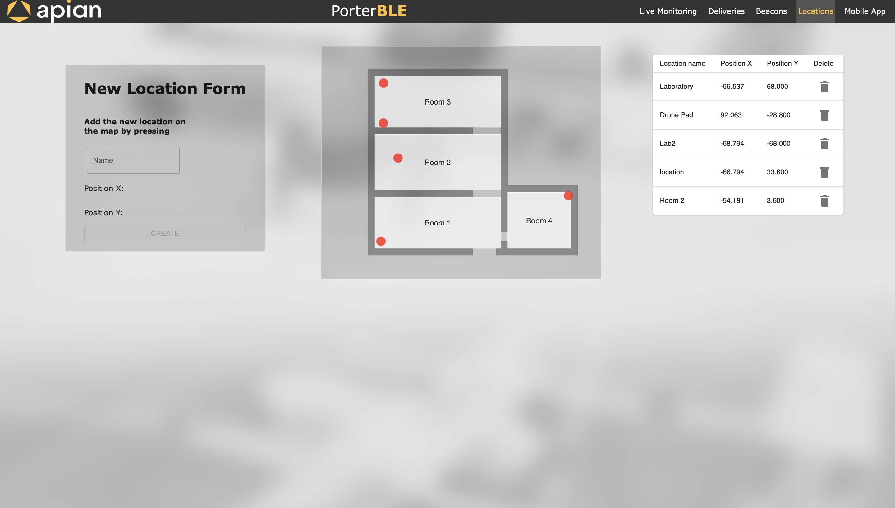 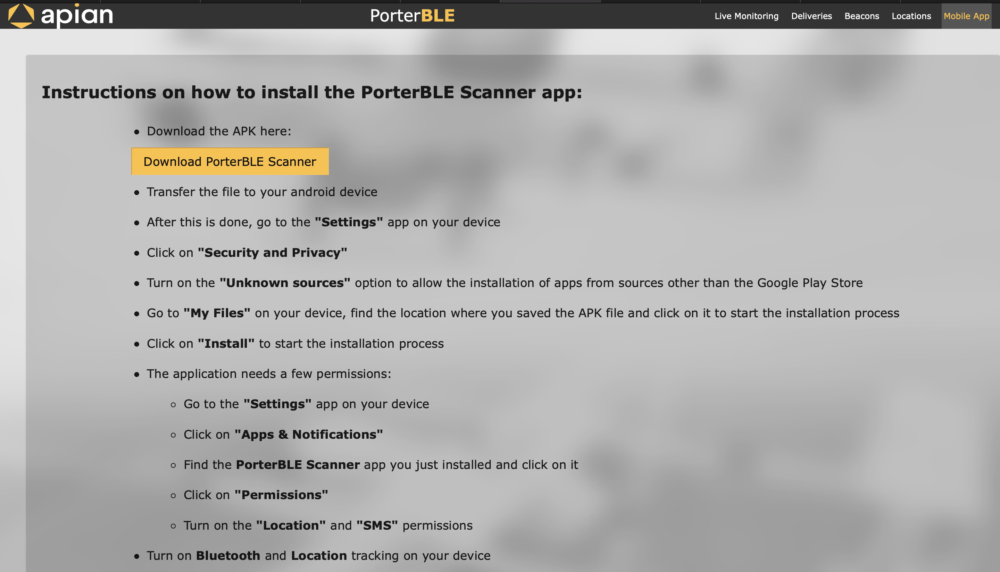
After multiple iterations of designs, we finally started coding our website based on the UI/UX design we made. At this point, we realized we haven’t yet considered a couple of things such as adding the option for users to specify a pick-up/delivery location and beacons on the map. There were quite a few design changes from our Figma designs. For example, for the porter table on the Live Monitoring page, not only do we have the Porter name but we also added status, last updated, the option to make a porter available or unavailable, and the ability to delete a porter. Most of these additional features were added after going back and forth with our client.
Final Website


Finally we are proud to say that we have finalized our UI/UX for our web app. There are a couple of changes such as the floor plan. The floor plan displayed is actually the actual hospital floor plan in which we are going to deploy our project in. We made the design a lot cleaner than the previous design and we made sure to highlight important actions with bright or dark colors.